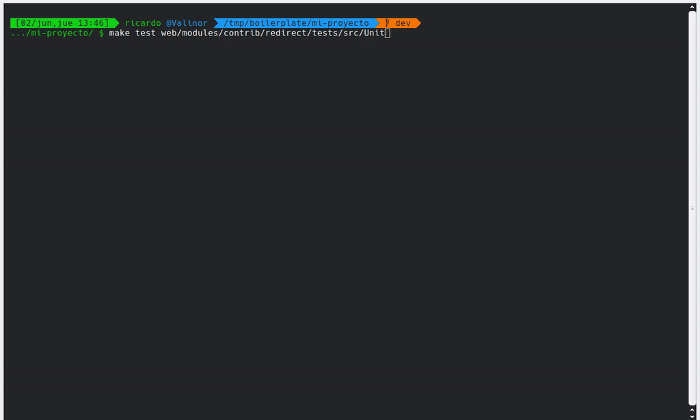

Desarrollo basado en boilerplate

Ricardo Sanz
Drupal Developer & DevOps
drupal.org/u/tunic
sanzante @ Twitter
Índice
- Comenzar un proyecto
- Pon un boilerplate en tu
vidaproyecto - Boilerplate en detalle
- Otros usos
- ¿Esto no es como...?
- ¿Demo?
- Preguntas
Comenzar con un proyecto
Comenzar un proyecto
Continuar comenzando un proyecto
Otras situaciones
- Unirse a un proyecto
-
Empezar un nuevo proyecto
- Recodar decisiones
- Recordar cómo hacerlas
Ejes de problemáticas
- Código
- Infraestructura local
Pon un boilerplate en tu vida proyecto
¿Qué es un boilerplate de Drupal?
- Código de referencia sobre el que construir
- Plantilla sobre la que extender
- Una base de la que partir
Boilerplate Drupal: Objetivos
- Iniciar proyectos rápidamente
- Base de código (Drupal y herramientas)
- Decisiones tećnicas
- Estandarización
- Reducción del tiempo de onboarding
- Reducción de estrés
- Proyectos autocontenidos en el repositorio
- Herramientas estándar
Boilerplate Drupal: ¿Qué ofrece?
- Código Drupal y Drush
- Preconfiguraciones
- Entorno de ejecución sobre Docker4Drupal
- Testing: Behat, BackstopJS, PHPUnit
- Wiki de documentación con MkDocs
- Análisis de código
- Fácil manejo (ocultar sintáxis de gestión)
- Instalación con un comando
- ...
Demo: creación inicial
composer create-project --ignore-platform-reqs metadrop/drupal-boilerplate mi-proyecto
Demo: creación inicial (vídeo)

Boilerplate en detalle
Dónde obtenerlo
- https://github.com/Metadrop/drupal-boilerplate
- Software Libre
- Contribuciones bienvenidas
- Estable pero en desarrollo
Requisitos
- PHP (para creación inicial)
- Composer (para creación inicial)
- Drush Launcher (recomendado por comodidad)
- Docker
- Docker Compose
- Linux (en teoría funciona en otros SO)
Infraestructura Docker
- Basado en Docker4Drupal
- Apache, NGINX, MariaDB, PostgreSQL, PHP…
- Varias versiones disponibles cambiando .env
- Redis, Memcached, NodeJS, Solr, Elasticsearch…
- Configuración estándar de Docker Compose
Subtheme de Radix (opcional)
- Theme base con Bootstrap (4 ó 5)
- Generación automática de subtheme para el proyecto
- Sass, ES6 y BrowerSync
- Módulo Components
- Opcional, puede no crearse
Estructura de directorios
Drush
- Aliases de entornos
- drush.yml
- drush.yml local
- Ejemplo fichero Policy
- No sobreescribir BD de producción
Testing: Behat
- Desarrollo orientado a comportamiento
- Tests de aceptación
- Lenguaje natural (para no técnicos)
- Usa un navegador real o ligero
- Contextos adicionales (Nuvole, Metadrop)
Demo: ejecución
make behat
Demo: ejecución Behat (vídeo)

Testing: BackstopJS
- Tests de regresión visual
- Se crean referencias contra las que se testea
- Se puede definir grado de similitud o ignorar zonas
- Resultados visuales
Demo: ejecución
make backstopjs-reference make backstopjs-test(Realizar algún cambio)
make backstopjs-test
Demo: ejecución BackstopJS (vídeo)

Testing: PHPUnit
- Integrados con Drupal core
- UnitTestCase: test unitarios
- KernelTestBase: tests con Drupal casi levantado
- BrowserTestBase: tests de navegador
- WebDriverTestBase: tests de navegador con JS
Demo: ejecución
(Tests unitarios del móddulo Redirect)
make test web/modules/contrib/redirect/tests/src/Unit(Todos los tests del móddulo Redirect, más lento)
make test web/modules/contrib/redirect/tests
Demo: ejecución PHPUnit (vídeo)

Depuración: XDebug
- Depuración paso a paso
- Examinar variables
- Seguir flujo de ejecución
- Imprescindible si programas
Demo
cp docker-compose.xdebug.override.yml.dist docker-compose.xdebug.override.yml vi docker-compose.xdebug.override.yml(Configurar según IDE)
make xdebug make xdebug-disable
Demo: Usar XDebug (vídeo)

Análisis de código: commit Git
- Git hook al comitear llama a GrumPHP
- Formato mensaje de commit
- PHPlint: Sintáxis PHP
- YAMLint: Sintáxis YAML
- Errores en ficheros Composer
- JSON Lint: Sintáxis JSON
- DrupalCheck: diversas comprobaciones
- PHPCD: Detector de copia/pega
- CodeSniffer: Coding standards y buenas prácticas
Análisis de código: manual
- Lanzado manualmente
- Ideal para tendencias en testing automático
- CodeSniffer: Coding standards y buenas prácticas
- PHPMD: Código maloliente
- PHPCD: Detector de copia/pega
Documentación: MkDocs
- Wiki para documentar temas técnicos
- Ej: Architecture decision record (ADR)
- Se intenta que el proyecto esté autocontenido
Otras herramientas
- MailHog: capturador de correos salientes
- Adminer: interfaz gráfico para la BD
- Portainer: información sobre contenedores
- ...
Makefiles
make info
make test
make behat
make frontend
make setup
make setup-from-config
make shell
make drush
make logs
Scripthor
- Pequeña colección de scripts de utilidades
- Backup (BD, código y ficheros de contenido)
- Construir recursos frontend (Ej: Sass)
- Actualización automática de paquetes Composer
- Recarga entorno local con entorno de referencia
Otros usos
Entornos locales como churros
- Probar un módulo o theme, rápidamente
- Montar otro entorno de un proyecto, rápidamente
- Contribuir al core o una extensión, rápidamente
- ¿Estilo Simplytest.me en local?
Estandarizar flujos de trabajo
- make setup o make setup-from-config y empezar
- Estandarizar decisiones
- Estandarizar integración con CI
- Estandarizar X
Integración contínua
- Usable en CI si acepta Docker Compose
- Mismo entorno que en desarrollo local
- (que debería ser igual o muy parecido a Prod)
- ¡Actualizaciones cuasi-automáticas!
Boilerplotear un proyecto
- Aplicarlo a un proyecto existente
- Crear boilerplate e integrar código
- Integrar composer.json
- Tiempo: unas pocas horas
¿Esto no es como...?
DDEV, Docksal, Lando...
- Sí y no
- Se centran en el eje de infraestructura
- Potentes y guiados
- Ciertos límites
- Hay solapamiento (sobre todo en Docker4Drupal)
- Futuro: compatible con DDEV, Lando, Docksal
- Futuro: más decisiones técnicas, más opciones, ...
¿Demo?
Preguntas